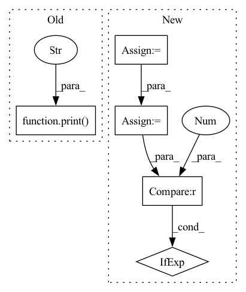

Pattern ID :24438
Before Change
err = np.mean(
np.abs(np.concatenate(coeffs) - torch.cat(coeffs2, -1).squeeze().numpy())
)
print("haar coefficient error scale 2" , err, ["ok" if err < 1e-4 else "failed!"])
assert err < 1e-4
def test_conv_fwt_haar_lvl2_odd():After Change
coeffs2 = wavedec(ptdata, wavelet, level=2)
assert len(coeffs) == len(coeffs2)
pywt_coeffs = np.concatenate(coeffs)
ptwt_coeffs = torch.cat(coeffs2, -1).squeeze().numpy()
err = np.mean(np.abs(pywt_coeffs - ptwt_coeffs))
print("haar coefficient error scale 2", err, ["ok" if err < 1e-6 else "failed!"])
assert np.allclose(pywt_coeffs, ptwt_coeffs)
rec = waverec(coeffs2, wavelet).squeeze().numpy()
err = np.mean(np.abs((data - rec)))In pattern: SUPERPATTERN
Frequency: 3
Non-data size: 5
Instances Fragment ID: 75906278
Project Name: v0lta/pytorch-wavelet-toolbox
Commit Name: c52a0038ca7ceb817da834840a1655d55ff6f1a3
Time: 2021-07-02
Author: moritz@wolter.tech
File Name: tests/test_convolution_fwt.py
M Class Name: AnonimousClass
N Class Name: AnonimousClass
M Method Name: test_conv_fwt_haar_lvl2(0)
N Method Name: test_conv_fwt_haar_lvl2(0)
M Parent Class:
N Parent Class:
M File Name: tests/test_convolution_fwt.py
N File Name: tests/test_convolution_fwt.py
M Start Line: 42
M End Line: 49
N Start Line: 22
N End Line: 56
Before Change
Displays all the tables and figures given a csv file with segmentation metrics
Columns expected: Patient,Structure,Dice,HausdorffDistance_mm,MeanDistance_mm
print(f"Reading raw metrics data from: {path_csv}" )
df = pd.read_csv(path_csv)
with pd.option_context("display.max_rows", None, "display.max_columns", None, "display.width", 150):
display_metric(df, MetricsFileColumns.Dice.value, outlier_range, max_row_count, high_values_are_good=True)
display_metric(df, MetricsFileColumns.HausdorffDistanceMM.value, outlier_range, max_row_count,After Change
// those paths contain the run ID, meaning that the output is different for each run, and hence can"t have
// HTML files in regression tests. Try to be smart and print as much information as possible up to the "outputs"
// folder
path = Path(path_csv)
outputs_folder = [p for p in path.parents if p.name == DEFAULT_AML_UPLOAD_DIR]
path_to_print = path.relative_to(outputs_folder[0]) if len(outputs_folder) == 1 else path
print(f"Reading raw metrics data from: {path_to_print}")
df = pd.read_csv(path_csv)
with pd.option_context("display.max_rows", None, "display.max_columns", None, "display.width", 150): Fragment ID: 75906279
Project Name: microsoft/innereye-deeplearning
Commit Name: 01c31ed0e50e7836120cf25b4b30cd10c86c236c
Time: 2021-06-17
Author: antonsc@microsoft.com
File Name: InnerEye/ML/reports/segmentation_report.py
M Class Name: AnonimousClass
N Class Name: AnonimousClass
M Method Name: plot_scores_for_csv(3)
N Method Name: plot_scores_for_csv(3)
M Parent Class:
N Parent Class:
M File Name: InnerEye/ML/reports/segmentation_report.py
N File Name: InnerEye/ML/reports/segmentation_report.py
M Start Line: 21
M End Line: 21
N Start Line: 27
N End Line: 30
Before Change
decoder = config.decoder.create().to(device = device)
num_parameters = sum(p.numel() for p in decoder.parameters())
print(print_ribbon("Loaded Config", repeat=40))
print(f"Number of parameters: {num_parameters}" )
tracker = create_tracker(config, **config.tracker.dict())
train(dataloaders, decoder, After Change
// Set up accelerator for configurable distributed training
ddp_kwargs = DistributedDataParallelKwargs(find_unused_parameters=True)
accelerator = Accelerator(kwargs_handlers=[ddp_kwargs])
// Set up data
all_shards = list(range(config.data.start_shard, config.data.end_shard + 1))
world_size = accelerator.num_processes
rank = accelerator.process_index
shards_per_process = len(all_shards) // world_size
assert shards_per_process > 0, "Not enough shards to split evenly"
my_shards = all_shards[rank * shards_per_process: (rank + 1) * shards_per_process]
dataloaders = create_dataloaders (
available_shards=my_shards,
img_preproc = config.data.img_preproc,
train_prop = config.data.splits.train,
val_prop = config.data.splits.val,
test_prop = config.data.splits.test,
n_sample_images=config.train.n_sample_images,
**config.data.dict(),
rank = rank,
seed = config.seed,
)
// Create the decoder model and print basic info
decoder = config.decoder.create()
num_parameters = sum(p.numel() for p in decoder.parameters())
// Create and initialize the tracker if we are the master
tracker = create_tracker(accelerator, config, config_path) if rank == 0 else create_tracker(accelerator, config, config_path, tracker_type="dummy")
accelerator.print(print_ribbon("Loaded Config", repeat=40))
accelerator.print(f"Running training with {accelerator.num_processes} processes and {accelerator.distributed_type} distributed training") Fragment ID: 75906274
Project Name: lucidrains/dalle2-pytorch
Commit Name: 58892135d9bcf117921c885dda161c0b67452096
Time: 2022-06-19
Author: aidan.dempster@gmail.com
File Name: train_decoder.py
M Class Name: AnonimousClass
N Class Name: AnonimousClass
M Method Name: initialize_training(2)
N Method Name: initialize_training(1)
M Parent Class:
N Parent Class:
M File Name: train_decoder.py
N File Name: train_decoder.py
M Start Line: 410
M End Line: 431
N Start Line: 486
N End Line: 523